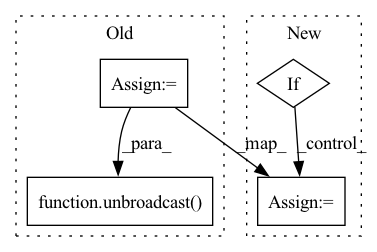

Pattern ID :41908

Before Change
a, b = ctx.saved_tensors
grad_a = np.ones(a.shape) * grad_output.data
grad_b = np.ones(b.shape) * grad_output.data
grad_a = tensor.Tensor(unbroadcast(grad_a, a.shape))
grad_b = tensor.Tensor(unbroadcast(grad_b, b.shape))
return grad_a, grad_b
After Change
def backward(ctx, grad_output):
a, b = ctx.saved_tensors
if a.device == tensor.Device.CPU:
grad_a, grad_b = ops_cpu.add_backward(grad_output.data, a.shape, b.shape)
else:
grad_a, grad_b = ops_gpu.add_backward(ctx.cl_ctx, ctx.cl_queue, grad_output.data,
a.shape, b.shape)
return tensor.Tensor(grad_a), tensor.Tensor(grad_b)
In pattern: SUPERPATTERN
Frequency: 3
Non-data size: 4
Instances
Fragment ID: 117455873
Project Name: pabannier/nanograd
Commit Name: cfa262ec2ccafd4370bf2dbe7e19f217ea54ab15
Time: 2021-01-17
Author: pierreantoine.bannier@gmail.com
File Name: nanograd/nn/functional.py
M Class Name: Add
N Class Name: Add
M Method Name: backward(2)
N Method Name: backward(2)
M Parent Class: Function
N Parent Class: Function
M File Name: nanograd/nn/functional.py
N File Name: nanograd/nn/functional.py
M Start Line: 313
M End Line: 319
N Start Line: 321
N End Line: 327
'>
Before Change
def backward(ctx, grad_output):
x,y,powxy = ctx.saved_tensors
tmp = ctx.binary_op(BinaryOps.DIV, x, powxy) // pow(x,y)/x
tmp = ctx.binary_op(BinaryOps.MUL, y, tmp) // y * pow(x,y)/x
grad_x = unbroadcast(ctx, ctx.binary_op(BinaryOps.MUL, grad_output, tmp), x.shape) if ctx.needs_input_grad[0] else None
tmp = ctx.binary_op(BinaryOps.MUL, ctx.unary_op(UnaryOps.LOG, x), powxy) // log(x) * pow(x,y)
grad_y = unbroadcast(ctx, ctx.binary_op(BinaryOps.MUL, grad_output, tmp), y.shape) if ctx.needs_input_grad[1] else None
return grad_x, grad_y
After Change
def backward(ctx, grad_output):
x,y,powxy = ctx.saved_tensors
grad_x, grad_y = None, None
if ctx.needs_input_grad[0]:
tmp = ctx.binary_op(BinaryOps.DIV, x, powxy) // pow(x,y)/x
tmp = ctx.binary_op(BinaryOps.MUL, y, tmp) // y * pow(x,y)/x
grad_x = ctx.binary_op(BinaryOps.MUL, grad_output, tmp)
if ctx.needs_input_grad[1]:
tmp = ctx.binary_op(BinaryOps.MUL, ctx.unary_op(UnaryOps.LOG, x), powxy) // log(x) * pow(x,y)
'>
Fragment ID: 117455874
Project Name: geohot/tinygrad
Commit Name: dcbca4fdf15a249e0864289a3715fcaee9be005f
Time: 2022-06-12
Author: 72895+geohot@users.noreply.github.com
File Name: tinygrad/mlops.py
M Class Name: Pow
N Class Name: Pow
M Method Name: backward(2)
N Method Name: backward(2)
M Parent Class: Function
N Parent Class: Function
M File Name: tinygrad/mlops.py
N File Name: tinygrad/mlops.py
M Start Line: 109
M End Line: 113
N Start Line: 106
N End Line: 114
'>
Before Change
def backward(ctx, grad_output):
a, b = ctx.saved_tensors
grad_a = grad_output.data * b.data
grad_b = grad_output.data * a.data
grad_a = tensor.Tensor(unbroadcast(grad_a, a.shape))
grad_b = tensor.Tensor(unbroadcast(grad_b, b.shape))
return grad_a, grad_b
After Change
def backward(ctx, grad_output):
a, b = ctx.saved_tensors
if a.device == tensor.Device.CPU:
grad_a, grad_b = ops_cpu.mul_backward(grad_output.data, a.data, b.data)
else:
grad_a, grad_b = ops_gpu.mul_backward(ctx.cl_ctx, ctx.cl_queue, grad_output.data, a.data, b.data)
'>
Fragment ID: 117455867
Project Name: pabannier/nanograd
Commit Name: a760852f227cf84e2f4d6dc6008b0a38c4f10be5
Time: 2021-01-17
Author: pierreantoine.bannier@gmail.com
File Name: nanograd/nn/functional.py
M Class Name: Mul
N Class Name: Mul
M Method Name: backward(2)
N Method Name: backward(2)
M Parent Class: Function
N Parent Class: Function
M File Name: nanograd/nn/functional.py
N File Name: nanograd/nn/functional.py
M Start Line: 492
M End Line: 498
N Start Line: 492
N End Line: 497